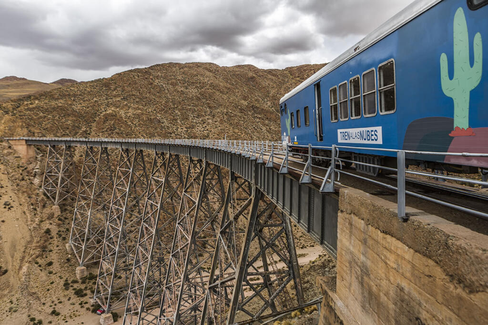

Salta es una provincia del norte argentino reconocida por sus paisajes, su cultura y su historia. Sus montañas, pueblos tradicionales y comidas típicas convierten a esta provincia en un destino único e inolvidable para los turistas.
Uno de los atractivos más importantes de Salta es el Tren a las Nubes, una experiencia turística que permite recorrer paisajes de gran altura y conocer la belleza natural de la provincia.

En esta sección se presenta un video promocional sobre los paisajes, la cultura y los lugares turísticos más importantes de Salta.
La Plaza 9 de Julio es uno de los puntos más importantes de la ciudad de Salta. Se encuentra en el centro histórico y está rodeada por edificios representativos como la Catedral Basílica y el Cabildo mejor conservado del país.